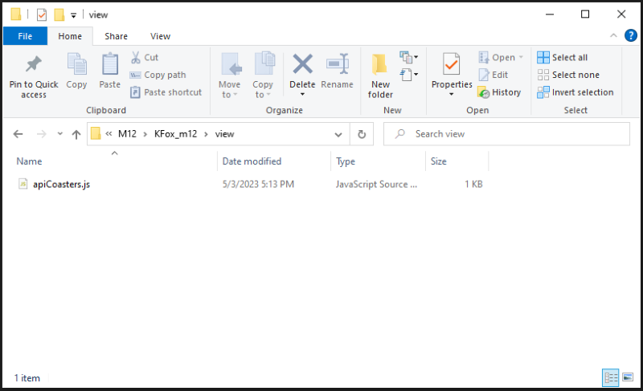

M12 Project
For this project, I made a json file called m12data.js with API data representing the roller coasters at a California amusement park called Knotts Berry Farm. This is very similar to the API from M11.
Next I made a script called m12app.js which creates a server to display the API data (roller coasters). Back in M11, this script contained all the code to host the site and display/filter the API coasters. However, for my M12 project, I split this code across multiple files and folders to fit an MVC (Model-View-Control) pattern. This allowed me to keep each .js file shorter, while making the overall app neater and more organized.
I also created three files with middleware functions that interact with the API coasters and display info in the Console.
For reference, the contents of each file are pictured below.
The view defines what is being displayed, and the control has the logic. The "node_modules" folder contains the package.json files and modules like Express. To summarize the functionality of the app, I am including the scripts and files below.
(root folder)
(control folder)
(view folder)
To test my app, I ran my m12app.js script in the Console.
After the server is running, I can view it at localhost:8080 in a browser. The home page shows the contents of my index.html file.
Now I can click the various links on the homepage to view or filter the API coasters, as well as testing the other two middleware functions.